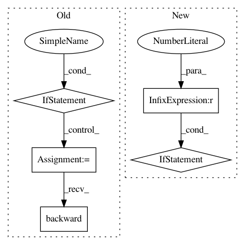

691e0b50d0b15665df5ec77eeec7c605c4283e1f,hypergan/trainers/alternating_trainer.py,AlternatingTrainer,_step,#AlternatingTrainer#Any#,19
Before Change
d_loss, g_loss = self.gan.forward_loss()
for hook in self.train_hooks:
loss = hook.forward()
if loss[0] is not None:
d_loss += loss[0]
d_loss.mean().backward()
self.d_optimizer.step()
self.g_optimizer.zero_grad()
d_loss, g_loss = self.gan.forward_loss()
After Change
for p, np in zip(self.gan.g_parameters(), g_grads):
p.grad = np
if(len(g_grads) > 0):
self.g_optimizer.step()
if self.current_step % 10 == 0:
self.print_metrics(self.current_step)
In pattern: SUPERPATTERN
Frequency: 3
Non-data size: 5
Instances
Project Name: HyperGAN/HyperGAN
Commit Name: 691e0b50d0b15665df5ec77eeec7c605c4283e1f
Time: 2020-03-08
Author: mikkel@255bits.com
File Name: hypergan/trainers/alternating_trainer.py
Class Name: AlternatingTrainer
Method Name: _step
Project Name: facebookresearch/Horizon
Commit Name: d84788c6b7fe218353c35348ec19a276a7f50b42
Time: 2020-09-19
Author: czxttkl@fb.com
File Name: reagent/training/ranking/seq2slate_trainer.py
Class Name: Seq2SlateTrainer
Method Name: train
Project Name: rusty1s/pytorch_geometric
Commit Name: 3735f4b48f52f7703944f36284b9e9ee3d1e8e5f
Time: 2020-10-27
Author: matthias.fey@tu-dortmund.de
File Name: examples/tgn.py
Class Name:
Method Name: train